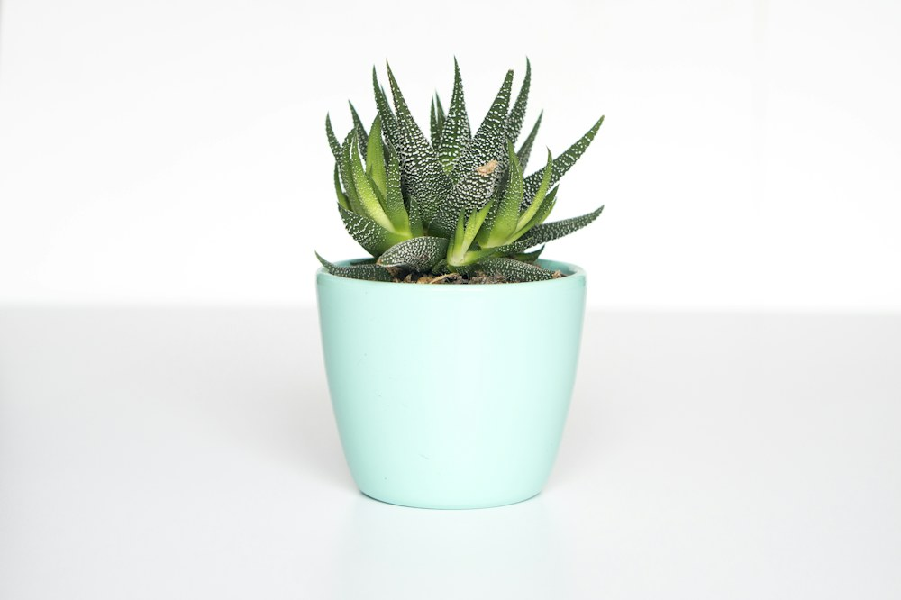

A fresher-feeling space
Air Purification
Some plants can filter certain airborne compounds in controlled conditions. At home, greenery adds a fresh feeling, while good ventilation remains key to air quality.
Read MoreRooted in the everyday
Houseplants do more than fill an empty corner. They help make a home feel personal, peaceful, and a little closer to nature.
A fresher-feeling space
Some plants can filter certain airborne compounds in controlled conditions. At home, greenery adds a fresh feeling, while good ventilation remains key to air quality.
Read More
A moment to pause
Watering a plant or watching a new leaf unfurl can become a gentle, grounding ritual that makes your home feel more peaceful.
Read More
A room with character
From a tall statement plant to a small windowsill friend, greenery adds color, texture, and an easy sense of style to any room.
Read More“A home feels more like home when something is growing in it.”
Make space for a little green.